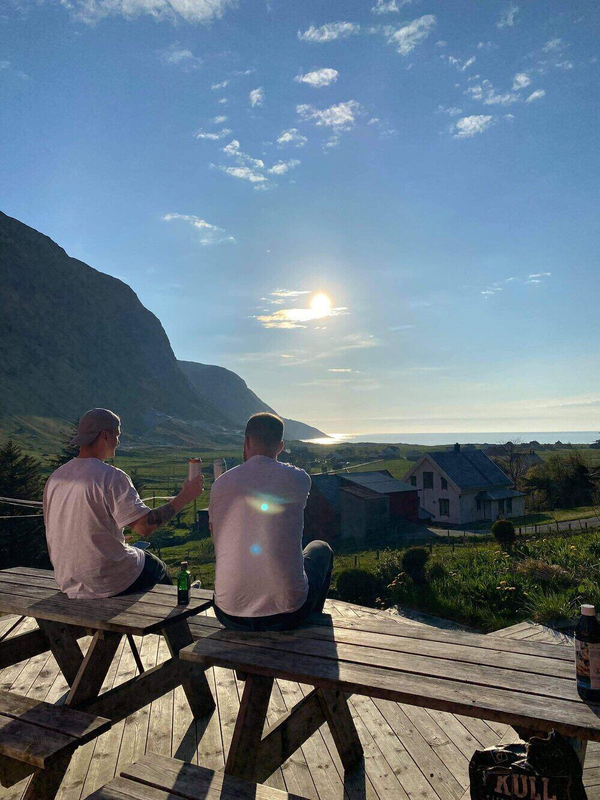
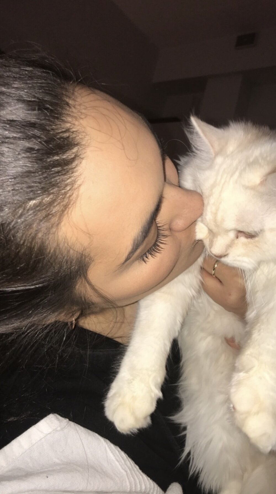

Welcome to my blog
Latest posts
My name is Preben Fjeldsbø, and I come from Bergen in Norway. When I was young, football was life and I trained and played all the time. Now I like to stay active with the gym and go jogging. Apart from this, I like to travel and see new places, play «Call of Duty» and watch football matches. I have to watch all Manchester United matches. They are the best! On the weekends I try to be social, be with friends and maybe go for a walk in the city. The reason I made this blog is because I have an exam at school. There we have been commissioned to create a blog. Therefore, I intend to let this blog be about my progression from an unusual illness / pain I get at night and in the morning. Let me explain more. I am 32 years old and about 1.5 years ago I started to get insanely sore inside my legs, always in the evening when I should go to bed and in the morning (2-3 hours).
Very difficult to describe the pain. It feels like my thighs are burning up. That someone lights them with a lighter, or that someone stabs them with a knife. Incredible pain. And it always happens when I go to bed and try to sleep. Impossible to sleep when it’s like that and it’s going on. Then I lie for 3-4 hours and struggle with these pains before I get so tired that I just fall asleep.So when it’s at its worst, I wake up after only a few hours and have the same pain when I wake up. Then I have these pains 2-3 hours after I have woken up and then they disappear about 90% and I feel quite nice in the middle of the day and the rest of the day. Know that it sounds very strange. But that’s exactly how I feel. When this pain is at its worst, I just want to start crying.
What needs to be said is that I get these pains quite periodically. They come and go a little. I can have them every night for 3 weeks intensely, then they disappear quite a lot for 2 weeks. Before they then come back and I can have them for 3 more weeks. This is how it has been since it started. Feels pretty nice at times, but then they come back hard. I have been to the doctor countless times and she is trying to figure out what it could be. I have taken all kinds of blood tests to check if everything is fine and if I am missing any vitamins or minerals. Everything was just fine there! I have taken tests for whether I am lactose intolerant or have celiac disease. Everything just fine.
I have been to 2-3 neurologists to find out if I could have a pinched nerve. I have checked on MRI if there may be something wrong in the head. Have had MRI and X-ray of the whole body without finding any fault there. Have checked if my nerves at Haukeland Hospital worked properly. Everything was just fine there! I even have dozens of sensors on my body that have analyzed my body when I sleep, with a camera from Haukeland Hospital. Everything was fine there! Have had tubes and camera down the neck to the stomach and from the butt and up without finding anything there either! Have searched hundreds of times online about what can be wrong when I have these symptoms but don’t find anything. Have done absolutely everything but no one finds out about these problems. It is incredibly tiring to have a problem that no one finds out. The doctors have done all the tests but they find nothing wrong.
I have spent a lot of time myself figuring out what it could be. I have thought that I might be eating too much eggs, jalapeno, milk. Or drink too much coffee or drink too little water. Then I changed this without it helping. Absolutely frustrating. I was on sick leave for a long time also because the pain was not bearable and I did not get any sleep.Today when I woke up the pain was so great that I again went to google and tried to find some answers. Then I thought about what I had eaten a lot of yesterday that could be the problem. And then I applied for allergy to ketchup. Then I came to the Norwegian side which gave me great hope. On that page it was written about «Allergy or intolerance to vegetables and legumes» and the first picture that struck me was a picture of lots of soybeans.
Then I thought that now I have finally found something. On the page: https://nhi.no/sykdommer/allergi/matvareallergi-og-intoleranse-kostrad/gronnsaker-belgfrukter/ it says that some people may be very allergic to, among other things, soybeans, chickpeas, lentils, peanuts, ketchup, tomato paste and berries. The reason why this gave me a big bright spot is that I feel like I started getting this pain shortly after I became a vegetarian about 2 years ago. Friends and people around me say I’m stupid and have to eat meat again. But I have been to the doctor and checked that I do not lack any minerals or vitamins so it is not because I do not eat meat. So I have stood my ground and not gone away from being a vegetarian even though I have this pain. I have sometimes wanted to start eating meat again to see if the pain would go away, but then at the same time I have decided not to eat meat anymore and the doctor has said that I do not lack any nutrients so therefore I have persevered.
What makes me very happy when I come across this page today is that I think now I have found the reason. I really hope I am allergic to one of these fruits, nuts or berries. Since I became a vegetarian, I have eaten a lot of beans, almost every day. I may be very allergic to beans. I have also eaten a lot of lentils and chickpeas. Maybe that’s the problem. About 2 years ago I started eating oatmeal with peanut butter very often for breakfast. So it is very possible that this is what I am hyperallergic to. Two years ago I also started eating ketchup without added sugar, ie with preservatives. And it says on the side that you can be allergic to it, or to tomatoes in general. So that may be the reason. There may also be other different fruits or berries I am allergic to. I often eat blueberries and kiwi on my oatmeal in the morning. What I therefore intend to find out on this blog is if I am allergic to some of what I normally eat. I will then exclude some of what I normally eat to see if I can get rid of the pain. So every day I therefore plan to post what I have eaten and not eaten and if I feel any improvement in the pain. This will be my little mini-project and I sincerely hope that I can find out what is the cause of my pain. We must have a name for this project and I choose to call it project: allergic? Wish me luck 🙂